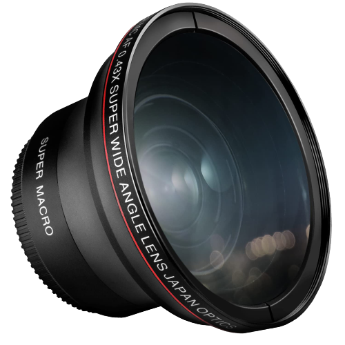
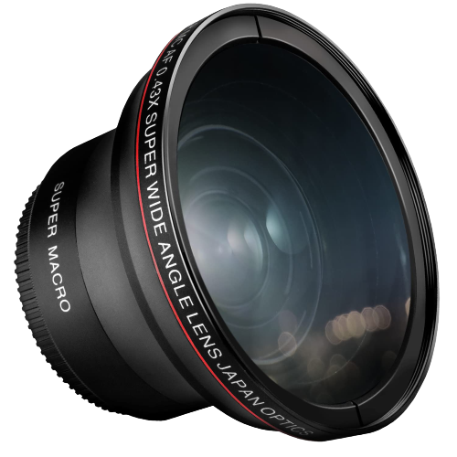

Camera Lens
A camera lens (also known as photographic lens or photographic objective) is an optical lens or assembly of lenses used in conjunction with a camera body and mechanism to make images of objects either on photographic film or on other media capable of storing an image chemically or electronically. There is no major difference in principle between a lens used for a still camera, a video camera, a telescope, a microscope, or other apparatus, but the details of design and construction are different. A lens might be permanently fixed to a camera, or it might be interchangeable with lenses of different focal lengths, apertures, and other properties. While in principle a simple convex lens will suffice, in practice a compound lens made up of a number of optical lens elements is required to correct (as much as possible) the many optical aberrations that arise. Some aberrations will be present in any lens system. It is the job of the lens designer to balance these and produce a design that is suitable for photographic use and possibly mass production.
 

The aperture specification of a lens describes how much light it is capable of gathering. Aperture simply means 'hole'; in this context, the hole that lets light pass through the lens and onto your camera's sensor. Lens apertures can be expressed in several different ways, with F4, f/4, 1:4 all meaning the same thing.
Typical rectilinear lenses can be thought of as "improved" pinhole "lenses". As shown, a pinhole "lens" is simply a small aperture that blocks most rays of light, ideally selecting one ray to the object for each point on the image sensor. Pinhole lenses have a few severe limitations: A pinhole camera with a large aperture is blurry because each pixel is essentially the shadow of the aperture stop, so its size is no smaller than the size of the aperture (third image). Here a pixel is the area of the detector exposed to light from a point on the object. Making the pinhole smaller improves resolution (up to a limit), but reduces the amount of light captured. At a certain point, shrinking the hole does not improve the resolution because of the diffraction limit. Beyond this limit, making the hole smaller makes the image blurrier as well as darker. Practical lenses can be thought of as an answer to the question: "how can a pinhole lens be modified to admit more light and give a smaller spot size?". A first step is to put a simple convex lens at the pinhole with a focal length equal to the distance to the film plane (assuming the camera will take pictures of distant objects[1]). This allows the pinhole to be opened up significantly (fourth image) because a thin convex lens bends light rays in proportion to their distance to the axis of the lens, with rays striking the center of the lens passing straight through. The geometry is almost the same as with a simple pinhole lens, but rather than being illuminated by single rays of light, each image point is illuminated by a focused "pencil" of light rays. of a pinhole camera. Light rays from an object pass through a small hole to form an image.Principle of a pinhole camera. Light rays from an object pass through a small hole to form an image. With a large pinhole, the image spot is large, resulting in a blurry image. With a large pinhole, the image spot is large, resulting in a blurry image. With a small pinhole light is reduced, but diffraction prevents the image spot from getting arbitrarily small. With a small pinhole light is reduced, but diffraction prevents the image spot from getting arbitrarily small. With a simple lens, much more light can be brought into sharp focus. With a simple lens, much more light can be brought into sharp focus. From the front of the camera, the small hole (the aperture), would be seen. The virtual image of the aperture as seen from the world is known as the lens's entrance pupil; ideally, all rays of light leaving a point on the object that enter the entrance pupil will be focused to the same point on the image sensor/film (provided the object point is in the field of view). If one were inside the camera, one would see the lens acting as a projector. The virtual image of the aperture from inside the camera is the lens's exit pupil. In this simple case, the aperture, entrance pupil, and exit pupil are all in the same place because the only optical element is in the plane of the aperture, but in general these three will be in different places. Practical photographic lenses include more lens elements. The additional elements allow lens designers to reduce various aberrations, but the principle of operation remains the same: pencils of rays are collected at the entrance pupil and focused down from the exit pupil onto the image plane.
A camera lens may be made from a number of elements: from one, as in the Box Brownie's meniscus lens, to over 20 in the more complex zooms. These elements may themselves comprise a group of lenses cemented together. The front element is critical to the performance of the whole assembly. In all modern lenses the surface is coated to reduce abrasion, flare, and surface reflectance, and to adjust color balance. To minimize aberration, the curvature is usually set so that the angle of incidence and the angle of refraction are equal. In a prime lens this is easy, but in a zoom there is always a compromise. The lens usually is focused by adjusting the distance from the lens assembly to the image plane, or by moving elements of the lens assembly. To improve performance, some lenses have a cam system that adjusts the distance between the groups as the lens is focused. Manufacturers call this different things: Nikon calls it CRC (close range correction); Canon calls it a floating system; and Hasselblad and Mamiya call it FLE (floating lens element).[2] is the most common material used to construct lens elements, due to its good optical properties and resistance to scratching. Other materials are also used, such as quartz glass, fluorite,[3][4][5][6] plastics like acrylic (Plexiglass), and even germanium and meteoritic glass.[citation needed] Plastics allow the manufacturing of strongly aspherical lens elements which are difficult or impossible to manufacture in glass, and which simplify or improve lens manufacturing and performance.[citation needed] Plastics are not used for the outermost elements of all but the cheapest lenses as they scratch easily. Molded plastic lenses have been used for the cheapest disposable cameras for many years, and have acquired a bad reputation: manufacturers of quality optics tend to use euphemisms such as "optical resin". However many modern, high performance (and high priced) lenses from popular manufacturers include molded or hybrid as as aspherical elements,so it is not true that all lenses with plastic elements are of low photographic quality.[citation needed]
The two fundamental parameters of an optical lens are the focal length and the maximum aperture. The lens' focal length determines the magnification of the image projected onto the image plane, and the aperture the light intensity of that image. For a given photographic system the focal length determines the angle of view, short focal lengths giving a wider field of view than longer focal length lenses. A wider aperture, identified by a smaller f-number, allows using a faster shutter speed for the same exposure. The camera equation, or G#, is the ratio of the radiance reaching the camera sensor to the irradiance on the focal plane of the camera lens.[8] The maximum usable aperture of a lens is specified as the focal ratio or f-number, defined as the lens's focal length divided by the effective aperture (or entrance pupil), a dimensionless number. The lower the f-number, the higher light intensity at the focal plane. Larger apertures (smaller f-numbers) provide a much shallower depth of field than smaller apertures, other conditions being equal. Practical lens assemblies may also contain mechanisms to deal with measuring light, secondary apertures for flare reduction,[9] and mechanisms to hold the aperture open until the instant of exposure to allow SLR cameras to focus with a brighter image with shallower depth of field, theoretically allowing better focus accuracy. Focal lengths are usually specified in millimetres (mm), but older lenses might be marked in centimetres (cm) or inches. For a given film or sensor size, specified by the length of the diagonal, a lens may be classified as a: Normal lens: angle of view of the diagonal about 50° and a focal length approximately equal to the image diagonal. Wide-angle lens: angle of view wider than 60° and focal length shorter than normal. Long-focus lens: any lens with a focal length longer than the diagonal measure of the film or sensor.[10] Angle of view is narrower. The most common type of long-focus lens is the telephoto lens, a design that uses special optical configurations to make the lens shorter than its focal length. A side effect of using lenses of different focal lengths is the different distances from which a subject can be framed, resulting in a different perspective. Photographs can be taken of a person stretching out a hand with a wideangle, a normal lens, and a telephoto, which contain exactly the same image size by changing the distance from the subject. But the perspective will be different. With the wideangle, the hands will be exaggeratedly large relative to the head. As the focal length increases, the emphasis on the outstretched hand decreases. However, if pictures are taken from the same distance, and enlarged and cropped to contain the same view, the pictures will have identical perspective. A moderate long-focus (telephoto) lens is often recommended for portraiture because the perspective corresponding to the longer shooting distance is considered to look more flattering. The widest aperture lens in history of photography is believed to be the Carl Zeiss Planar 50mm f/0.7,[11] which was designed and made specifically for the NASA Apollo lunar program to capture the far side of the moon in 1966. Three of these lenses were purchased by filmmaker Stanley Kubrick in order to film scenes in his movie Barry Lyndon, using candlelight as the sole light source.[12][13][14]
{kind=link}
{kind=link}